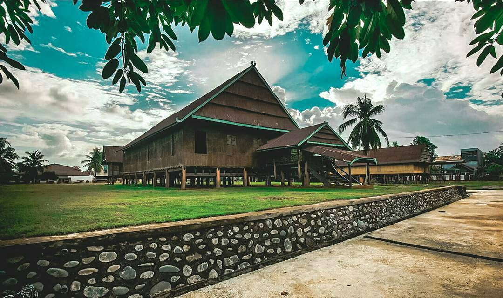

Bola Soba sebagai Simbol dan Identitas Masyarakat Bone
Rumah Adat Bola Soba berdiri di atas lahan seluas hampir setengah hektar di ruas jalan Latenritatta, Watampone. Rumah adat ini merupakan peninggalan sejarah. Dibangun pada masa pemerintahan Raja Bone ke-30, La Pawawoi Karaeng Sigeri sekitar tahun 1890, Bola Soba pada awalnya dibangun sebagai kediaman raja. Selanjutnya, Bola Soba ditempati oleh putra La Pawawoi, Baso Pagilingi Abdul hamid yang kemudian diangkat menjadi panglima perang kerajaan Bone. Bola Soba kembali beralih fungsi menjadi markas tentara dan kemudian menjadi mes atau penginapan untuk menjamu tamu belanda. Dari situlah rumah adat ini dinamakan Bola Soba yang berarti rumah persahabatan.
Saat ini rumah ini menjadi tempat latihan salah satu sanggar kesenian yang ada di kota watampone. Selain itu, rumah ini juga menyimpan beberapa benda bersejarah, meskipun tidak ada yang dapat menjelaskan sejarah rumah tersebut secara detail. Barang-barang yang tersimpan dalam rumah tersebut antara lain: Meriam tua, silsilah raja-raja Bone, potret lukisan Arung Palakka, dan beberapa benda yang sengaja disimpan pengunjung sebagai bentuk melepas nadzar.
KEMBALI